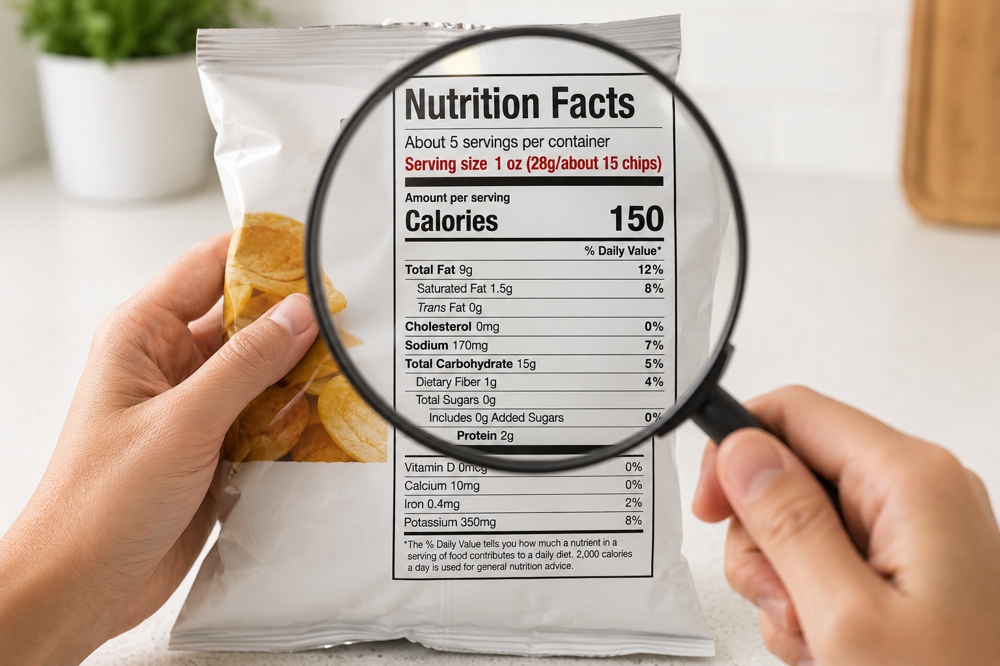
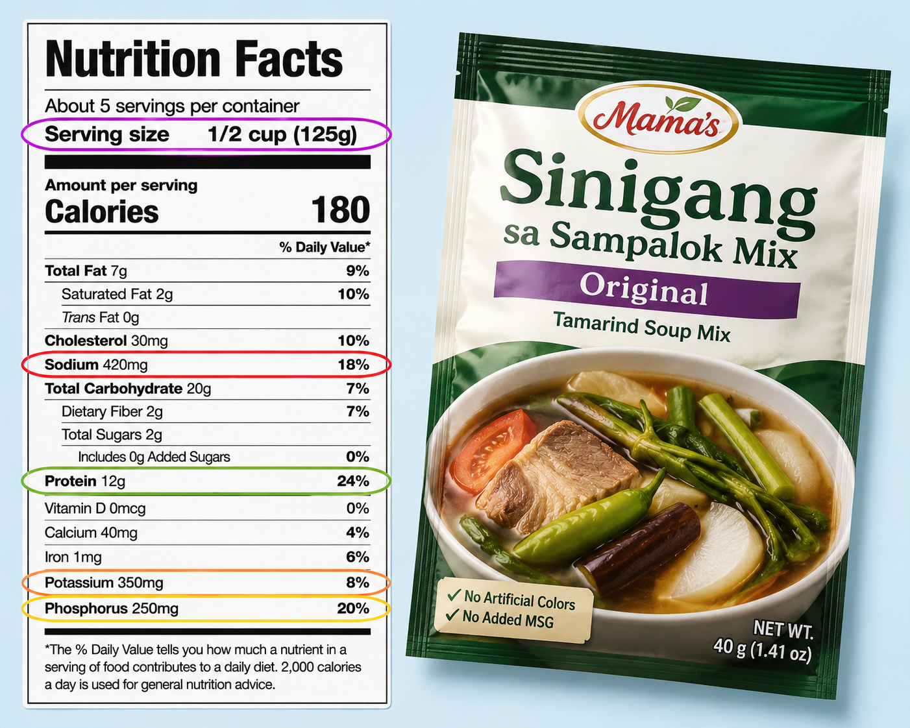
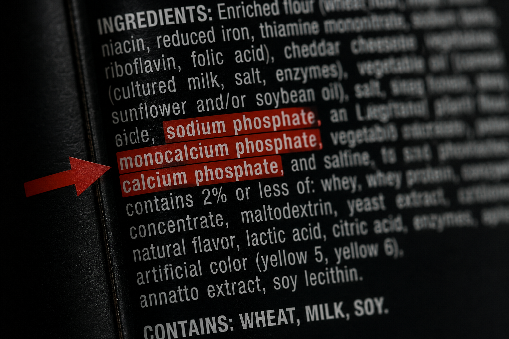
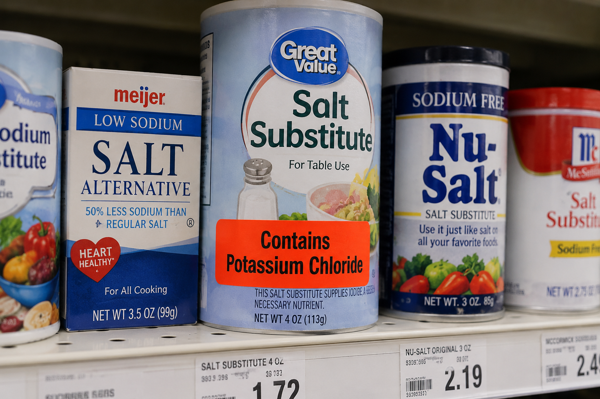
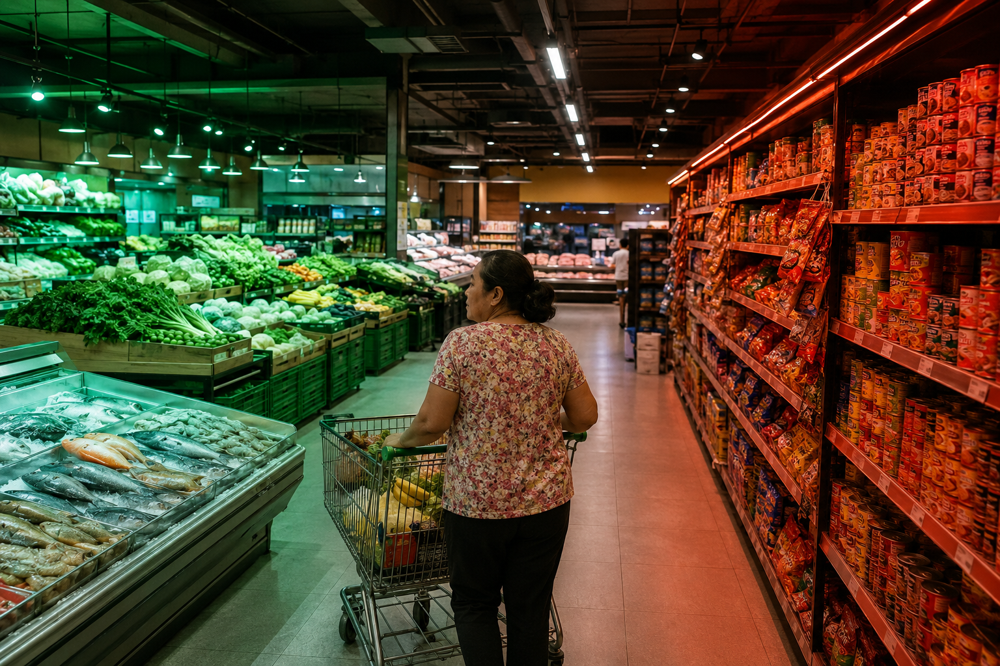

Anatomy of a Philippine Nutrition Facts LabelAnatomya ng Nutrition Facts Label sa PilipinasAnatomy sa Philippine Nutrition Facts LabelAnatomya ning Nutrition Facts Label king Pilipinas
Philippine nutrition labels follow the format mandated by FDA Circular 2014-014. Most packaged foods sold in SM, Robinsons, Puregold, and palengke stalls follow this layout. For CKD patients, the label is a clinical tool — not just a calorie counter. You are specifically looking for sodium, potassium, phosphorus, protein, and serving size information. Most Filipino patients have never been taught how to read a label for their kidney condition — this guide changes that.Ang mga nutrition label sa Pilipinas ay sumusunod sa format na itinakda ng FDA Circular 2014-014. Karamihan sa mga nakabalot na pagkain na ibinebenta sa SM, Robinsons, Puregold, at mga tindahan sa palengke ay sumusunod sa layout na ito. Para sa mga pasyenteng may CKD, ang label ay isang klinikal na kasangkapan — hindi lamang isang counter ng calorie. Hinahanap ninyo nang tiyak ang sodium, potassium, phosphorus, protina, at impormasyon sa serving size. Karamihan sa mga pasyenteng Pilipino ay hindi pa natuturuan kung paano magbasa ng label para sa kanilang kondisyon ng bato — binabago ng gabay na ito iyon.Ang mga nutrition label sa Pilipinas nagsubay sa format nga gitakda sa FDA Circular 2014-014. Kadaghanan sa mga nakabalot nga pagkaon nga gibaligya sa SM, Robinsons, Puregold, ug mga tindahan sa palengke nagsubay niini nga layout. Para sa mga pasyente nga adunay CKD, ang label usa ka klinikal nga himan — dili lamang usa ka counter sa calorie. Nangita kamo sa sodium, potassium, phosphorus, protina, ug impormasyon sa serving size. Kadaghanan sa mga pasyenteng Pilipino wala pa matudloan kung unsaon pagbasa sa label alang sa ilang kondisyon sa kidney — kini nga giya nagbag-o niana.Deng nutrition label king Pilipinas ya sumusunod sa format na itinakda ning FDA Circular 2014-014. Karamihan sa deng nakabalot na pamangan na ibinebenta sa SM, Robinsons, Puregold, at deng tindahan sa palengke ya sumusunod sa layout na ini. Para king deng pasyenteng may CKD, ing label ya metung a klinikal na kasangkapan — ali lamang metung a counter ning calorie. Hinahanap ninyo nang tiyak ing sodium, potassium, phosphorus, protina, at impormasyon sa serving size. Karamihan sa deng pasyenteng Pilipino ya ali pa natuturuan nung paano magbasa ning label para king kanilang kondisyon nining batu — binabago ning gabay na ini iyun.
The annotated nutrition label above shows a common product. All five CKD-critical data points are highlighted. Note that phosphorus is not listed — this is intentional by manufacturers and requires reading the ingredients list instead.Ang annotated nutrition label sa itaas ay nagpapakita ng isang karaniwang produkto. Lahat ng limang CKD-kritikal na datos ay naka-highlight. Pansinin na ang phosphorus ay hindi nakalista — ito ay sinasadya ng mga tagagawa at nangangailangan ng pagbabasa ng ingredients list sa halip.Ang annotated nutrition label sa ibabaw nagpakita sa usa ka komon nga produkto. Ang tanan nga lima ka CKD-kritikal nga datos gi-highlight. Hinumdumi nga ang phosphorus wala nakalista — kini gihimo sa tuyo sa mga tiggama ug nanginahanglan pagbasa sa ingredients list hinoon.Ing annotated nutrition label sa itaas ya nagpapakita ning metung a karaniwang produkto. Lahat ning limang CKD-kritikal na datos ya naka-highlight. Pansinin na ing phosphorus ya ali nakalista — ini ya sinasadya ning deng tagagawa at nangangailangan ning pagbabasa ning ingredients list sa halip.
The Serving Size Trap — How Patients Are MisledAng Bitag ng Serving Size — Paano Nalilito ang mga PasyenteAng Bitag sa Serving Size — Unsaon Pagkalimbong sa mga PasyenteIng Bitag ning Serving Size — Paano Nalilini deng Pasyente
The single most common labeling error that CKD patients make is reading the nutrition facts for one serving while consuming multiple servings. Manufacturers are legally permitted to set serving sizes to make their numbers look better. A bag of chips listed at "3 servings" has sodium, potassium, and phosphorus that must be multiplied by 3 if the whole bag is eaten. Always check servings per container first — before reading any other number.Ang pinaka-karaniwang pagkakamali ng mga pasyenteng may CKD ay ang pagbabasa ng nutrition facts para sa isang serving habang kumakain ng maraming serving. Ang mga tagagawa ay legal na pinahihintulutan na itakda ang mga serving size upang magmukhang mas mabuti ang kanilang mga numero. Ang isang bag ng chips na nakalista bilang "3 servings" ay may sodium, potassium, at phosphorus na dapat i-multiply ng 3 kung kakainin ang buong bag. Laging suriin muna ang servings per container — bago basahin ang anumang iba pang numero.Ang pinaka-komon nga sayop sa pagbabasa sa label sa mga pasyente nga adunay CKD mao ang pagbasa sa nutrition facts alang sa usa ka serving samtang nagkaon og daghang serving. Ang mga tiggama legal nga gitugotan sa pagtakda sa mga serving size aron mas maayo ang hitsura sa ilang mga numero. Ang usa ka bag sa chips nga nakalista nga "3 servings" adunay sodium, potassium, ug phosphorus nga kinahanglan i-multiply og 3 kung kaonon ang tibuok bag. Kanunay susihon una ang servings per container — sa wala pa mabasa ang bisan unsang laing numero.Ing pinaka-karaniwang pagkakamali ning deng pasyenteng may CKD ya ing pagbabasa ning nutrition facts para king metung a serving habang kumakain ning dacal a serving. Deng tagagawa ya legal na pinahihintulutan na itakda deng serving size para magmukhang mas mabuti ing kanildeng numero. Ing metung a bag ning chips na nakalista bilang "3 servings" ya may sodium, potassium, at phosphorus na dapat i-multiply ning 3 nung kakainin ing buong bag. Pirming suriin muna ing servings per container — bago basahin ing anumang iba pang numero.

A single pack of instant noodles, fully consumed, delivers nearly the entire daily sodium allowance for a CKD patient — even though the per-serving number appears modest. Never read the label for just one serving without checking how many servings are in the package.Ang isang pack ng instant noodles, kung kakainin nang buo, ay nagbibigay ng halos buong araw-araw na allowance ng sodium para sa isang pasyenteng may CKD — kahit na ang numero bawat serving ay mukhang maliit. Huwag basahin ang label para sa isang serving lamang nang hindi sinusuri kung ilang servings ang nasa pakete.Ang usa ka pack sa instant noodles, kung kaonon nang bug-os, naghatag sa halos tibuok adlaw-adlaw nga allowance sa sodium para sa usa ka pasyente nga adunay CKD — bisan pa nga ang numero matag serving daw gamay. Ayaw basaha ang label alang sa usa ka serving lamang nga wala susihon kung pila ka servings ang anaa sa pakete.Ing metung a pack ning instant noodles, nung kakainin nang buo, ya nagbibigay ning halos buoning aldo-aldo na allowance ning sodium para king metung a pasyenteng may CKD — kahit na ing numero bawat serving ya mukhang maliit. Eka basahin ing label para king metung a serving lamang nang ali sinusuri nung ilang servings ing nasa pakete.
The 3-second rule before buying any packaged foodAng 3-segundong panuntunan bago bumili ng anumang nakabalot na pagkainAng 3-segundo nga lagda sa wala pa mpalit og bisan unsang nakabalot nga pagkaonIng 3-segundong panuntunan bago bumili ning anumang nakabalot na pamangan
Before putting any packaged item in your cart: (1) find "servings per container," (2) multiply sodium by that number, (3) if total sodium exceeds 400mg — put it back or portion it precisely. This 3-second habit alone can prevent most dietary sodium errors in CKD patients shopping independently.Bago ilagay ang anumang nakabalot na produkto sa inyong cart: (1) hanapin ang "servings per container," (2) i-multiply ang sodium sa numerong iyon, (3) kung ang kabuuang sodium ay lampas sa 400mg — ibalik ito o i-portion nang tumpak. Ang 3-segundong gawing ito lamang ay makakapigil sa karamihan ng mga pagkakamali sa sodium para sa mga pasyenteng may CKD na namimili nang mag-isa.Sa wala pa ibutang ang bisan unsang nakabalot nga produkto sa inyong cart: (1) pangitaa ang "servings per container," (2) i-multiply ang sodium sa maong numero, (3) kung ang kinatibuk-ang sodium molapas sa 400mg — ibalik kini o i-portion nang tumpak. Kini nga 3-segundo nga batasan lamang makapugong sa kadaghanan sa mga sayop sa sodium alang sa mga pasyente nga adunay CKD nga namalit nga mag-inusara.Bago ilagay ing anumang nakabalot na produkto king ka cart: (1) hanapin ing "servings per container," (2) i-multiply ing sodium sa numerong iyun, (3) nung ing kabuuang sodium ya lampas sa 400mg — ibalik ini o i-portion nang tumpak. Ing 3-segundong gawing ini lamang ya makakapigil sa karamihan ning deng pagkakamali sa sodium para king deng pasyenteng may CKD na namimili nang mag-isa.
The 5 Numbers CKD Patients Must Read — In OrderAng 5 Numerong Dapat Basahin ng mga Pasyenteng may CKD — Sa Pagkakasunud-sunodAng 5 Numero nga Kinahanglan Basahon sa mga Pasyente nga adunay CKD — Sa PagkasunodIng 5 Numerong Dapat Basahin ning deng Pasyenteng may CKD — Sa Pagkakasunud-sunod
| # | What to Look ForAno ang HanapinUnsa ang PangitaonAno ing Hanapin | Your CKD Limit (per serving)Ang Inyong Limitasyon sa CKD (bawat serving)Ang Inyong Limitasyon sa CKD (matag serving)Ing Inyong Limitasyon sa CKD (bawat serving) | Red Flag ThresholdBabala na LimitasyonBabala nga LimitasyonBabala na Limitasyon |
|---|---|---|---|
| 1 | Servings per container — read this before everything else. Multiply all other numbers by this figure.Servings per container — basahin ito bago ang lahat. I-multiply ang lahat ng iba pang numero sa figure na ito.Servings per container — basaha kini una sa tanan. I-multiply ang tanan nga ubang numero niini nga bilang.Servings per container — basahin ini bago ing lahat. I-multiply ing lahat ning iba pang numero sa figure na ini. | N/A — this is the multiplierN/A — ito ang multiplierN/A — kini ang multiplierN/A — ini ing multiplier | If >1 serving per container and you plan to eat the whole thing — recalculate all numbersKung >1 serving bawat container at plano ninyong kainin ang lahat — kalkulahin muli ang lahat ng numeroKung >1 serving matag container ug plano ninyong kaonon ang tanan — kalkulahon pag-usab ang tanan nga numeroNung >1 serving bawat container at plano ninyong kainin ing lahat — kalkulahin muli ing lahat ning numero |
| 2 | Sodium (listed as "Sodium" on Philippine labels, in mg). Includes hidden salt, MSG, and sodium preservatives.Sodium (nakalista bilang "Sodium" sa mga label sa Pilipinas, sa mg). Kasama ang nakatagong asin, MSG, at mga preservative na may sodium.Sodium (nakalista nga "Sodium" sa mga label sa Pilipinas, sa mg). Naglakip sa nakatago nga asin, MSG, ug mga preservative nga adunay sodium.Sodium (nakalista bilang "Sodium" sa deng label king Pilipinas, sa mg). Kasama ing nakatagong asin, MSG, at deng preservative na may sodium. | Stage 3–5: <200mg per serving is ideal; <400mg acceptable; >600mg per serving is very highStage 3–5: <200mg bawat serving ang ideal; <400mg katanggap-tanggap; >600mg bawat serving ay napakataasStage 3–5: <200mg matag serving ang ideal; <400mg katanggap-tanggap; >600mg matag serving labi ka taasStage 3–5: <200mg bawat serving ing ideal; <400mg katanggap-tanggap; >600mg bawat serving ya napakataas | >600mg per serving = avoid or use only a fraction of the serving>600mg bawat serving = iwasan o gamitin lamang ang bahagi ng serving>600mg matag serving = likayi o gamita lamang ang gamay nga bahin sa serving>600mg bawat serving = iwasan o gamitin lamang ing bahagi ning serving |
| 3 | Potassium (in mg — now required on Philippine labels per FDA Circular 2021). If not listed: check ingredients for potassium chloride, potassium phosphate.Potassium (sa mg — kinakailangan na ngayon sa mga label sa Pilipinas ayon sa FDA Circular 2021). Kung hindi nakalista: suriin ang mga sangkap para sa potassium chloride, potassium phosphate.Potassium (sa mg — gikinahanglan na karon sa mga label sa Pilipinas sumala sa FDA Circular 2021). Kung wala nakalista: susihon ang mga sangkap alang sa potassium chloride, potassium phosphate.Potassium (sa mg — kinakailangan na ngayon sa deng label king Pilipinas ayon sa FDA Circular 2021). Nung ali nakalista: suriin deng sangkap para king potassium chloride, potassium phosphate. | Stage 4–5/dialysis: <200mg per serving; Stage 3: <300mg per servingStage 4–5/dialysis: <200mg bawat serving; Stage 3: <300mg bawat servingStage 4–5/dialysis: <200mg matag serving; Stage 3: <300mg matag servingStage 4–5/dialysis: <200mg bawat serving; Stage 3: <300mg bawat serving | >300mg per serving requires counting toward your daily potassium total>300mg bawat serving ay kailangang isama sa inyong kabuuang araw-araw na potassium>300mg matag serving kinahanglan ihap padulong sa inyong adlaw-adlaw nga kinatibuk-ang potassium>300mg bawat serving ya kailangang isama king ka kabuuaning aldo-aldo na potassium |
| 4 | Phosphorus — often NOT listed on Philippine labels. If listed: <100mg per serving is acceptable. If not listed: scan ingredients for any word containing "phosphate."Phosphorus — madalas HINDI nakalista sa mga label sa Pilipinas. Kung nakalista: <100mg bawat serving ay katanggap-tanggap. Kung hindi nakalista: hanapin sa mga sangkap ang anumang salitang naglalaman ng "phosphate."Phosphorus — kasagaran WALA nakalista sa mga label sa Pilipinas. Kung nakalista: <100mg matag serving katanggap-tanggap. Kung wala nakalista: pangitaon sa mga sangkap ang bisan unsang pulong nga naglakip og "phosphate."Phosphorus — madalas HINDI nakalista sa deng label king Pilipinas. Nung nakalista: <100mg bawat serving ya katanggap-tanggap. Nung ali nakalista: hanapin sa deng sangkap ing anumang salitang naglalaman ning "phosphate." | Stage 3–5/dialysis: <100mg per serving; any inorganic phosphate additive = avoidStage 3–5/dialysis: <100mg bawat serving; anumang inorganic phosphate additive = iwasanStage 3–5/dialysis: <100mg matag serving; bisan unsang inorganic phosphate additive = likayiStage 3–5/dialysis: <100mg bawat serving; anumang inorganic phosphate additive = iwasan | Any inorganic phosphate in ingredients (E338–E452) = high risk regardless of amount listedAnumang inorganic phosphate sa mga sangkap (E338–E452) = mataas na panganib anuman ang dami na nakalistaBisan unsang inorganic phosphate sa mga sangkap (E338–E452) = taas nga peligro bisan unsa ang gidaghanon nga nakalistaAnumang inorganic phosphate sa deng sangkap (E338–E452) = matas a panganib anuman ing dami na nakalista |
| 5 | Protein — important for pre-dialysis CKD (restrict) and dialysis (ensure adequate). Limit per serving for pre-dialysis: aim for 15–20g maximum per main meal from all sources combined.Protina — mahalaga para sa pre-dialysis CKD (limitahan) at dialysis (tiyaking sapat). Limitasyon bawat serving para sa pre-dialysis: target na 15–20g maximum bawat pangunahing pagkain mula sa lahat ng pinagkukunan.Protina — importante para sa pre-dialysis CKD (limitahan) ug dialysis (sigurohon nga igo). Limitasyon matag serving para sa pre-dialysis: target nga 15–20g maximum matag pangunahing pagkaon gikan sa tanan nga tinubdan.Protina — mahalaga para king pre-dialysis CKD (limitahan) at dialysis (tiyaking sapat). Limitasyon bawat serving para king pre-dialysis: target na 15–20g maximum bawat pangunahining pamangan mula king amin ning pinagkukunan. | Pre-dialysis: <20g per meal from all sources; dialysis: ensure 25–30g per mealPre-dialysis: <20g bawat pagkain mula sa lahat ng pinagkukunan; dialysis: tiyaking 25–30g bawat pagkainPre-dialysis: <20g matag pagkaon gikan sa tanan nga tinubdan; dialysis: sigurohon nga 25–30g matag pagkaonPre-dialysis: <20g bawat pamangan mula king amin ning pinagkukunan; dialysis: tiyaking 25–30g bawat pamangan | Pre-dialysis: any product with >15g protein per serving counts significantly toward daily limitPre-dialysis: anumang produkto na may >15g protina bawat serving ay malaki ang kontribusyon sa araw-araw na limitasyonPre-dialysis: bisan unsang produkto nga adunay >15g protina matag serving makapanghilabot pag-ayo sa adlaw-adlaw nga limitasyonPre-dialysis: anumang produkto na may >15g protina bawat serving ya malaki ing kontribusyon sa aldo-aldo na limitasyon |

The five CKD-critical numbers on a Philippine nutrition label, in reading order. Servings per container is the multiplier for everything else. Phosphorus requires checking the ingredients list — it is rarely disclosed in the nutrition panel itself.Ang limang CKD-kritikal na numero sa isang nutrition label sa Pilipinas, sa pagkakasunud-sunod ng pagbabasa. Ang servings per container ay ang multiplier para sa lahat ng iba pa. Ang phosphorus ay nangangailangan ng pagsusuri sa listahan ng mga sangkap — ito ay bihirang ibunyag sa nutrition panel mismo.Ang lima ka CKD-kritikal nga numero sa usa ka nutrition label sa Pilipinas, sa pagkasunod sa pagbasa. Ang servings per container mao ang multiplier alang sa tanan pa. Ang phosphorus nagkinahanglan sa pagsusi sa listahan sa mga sangkap — kini bihirang ipahayag sa nutrition panel mismo.Ing limang CKD-kritikal na numero sa metung a nutrition label king Pilipinas, sa pagkakasunud-sunod ning pagbabasa. Ing servings per container ya ing multiplier para king lahat ning iba pa. Ing phosphorus ya nangangailangan ning pagsusuri sa listahan ning deng sangkap — ini ya bihirang ibunyag sa nutrition panel mismo.
Why % Daily Value misleads CKD patientsBakit Nakakalito ang % Daily Value sa mga Pasyenteng may CKDNgano nga ang % Daily Value Nakalimbong sa mga Pasyente nga adunay CKDBakit Nakakalini ing % Daily Value sa deng Pasyenteng may CKD
%DV on Philippine nutrition labels is calculated based on a 2,000 kcal diet for a healthy adult. The reference values used: sodium 2,300mg, potassium 4,700mg. But CKD Stage 4–5 patients need sodium <2,000mg and potassium <2,000mg — different reference points. A product showing "20% DV sodium" (460mg) is actually 23% of your CKD sodium limit. Always convert %DV back to milligrams and compare to your personal CKD targets — not the general population values.Ang %DV sa mga nutrition label sa Pilipinas ay kinakalkula batay sa 2,000 kcal na diyeta para sa isang malusog na may-edad. Ang mga reference value na ginagamit: sodium 2,300mg, potassium 4,700mg. Ngunit ang mga pasyenteng may CKD Stage 4–5 ay nangangailangan ng sodium na <2,000mg at potassium na <2,000mg — iba ang mga reference point. Ang isang produkto na nagpapakita ng "20% DV sodium" (460mg) ay talagang 23% ng inyong limitasyon sa sodium para sa CKD. Laging i-convert ang %DV pabalik sa milligrams at ihambing sa inyong personal na mga target sa CKD — hindi sa mga halaga para sa pangkalahatang populasyon.Ang %DV sa mga nutrition label sa Pilipinas gikalkula base sa 2,000 kcal nga diyeta alang sa usa ka himsog nga hamtong. Ang mga reference value nga gigamit: sodium 2,300mg, potassium 4,700mg. Apan ang mga pasyente nga adunay CKD Stage 4–5 nanginahanglan og sodium nga <2,000mg ug potassium nga <2,000mg — lain ang mga reference point. Ang usa ka produkto nga nagpakita og "20% DV sodium" (460mg) tinuod nga 23% sa inyong limitasyon sa sodium alang sa CKD. Kanunay i-convert ang %DV balik sa milligrams ug ikumpara sa inyong personal nga mga target sa CKD — dili sa mga kantidad alang sa kinatibuk-ang populasyon.Ing %DV sa deng nutrition label king Pilipinas ya kinakalkula batay sa 2,000 kcal na diyeta para king metung a malusog na may-edad. Deng reference value na ginagamit: sodium 2,300mg, potassium 4,700mg. Ngarud deng pasyenteng may CKD Stage 4–5 ya nangangailangan ning sodium na <2,000mg at potassium na <2,000mg — iba deng reference point. Ing metung a produkto na nagpapakita ning "20% DV sodium" (460mg) ya talagang 23% ning inyong limitasyon sa sodium para king CKD. Pirming i-convert ing %DV pabalik sa milligrams at ihambing king ka personal na deng target sa CKD — ali sa deng halaga para king pangkalahatang populasyon.
Your personal CKD shopping targets — quick referenceAng inyong personal na mga target sa pamimili para sa CKD — mabilis na sanggunianAng inyong personal nga mga target sa pagpalit alang sa CKD — mabilis nga sanggunianIng inyong personal na deng target sa pamimili para king CKD — mabilis na sanggunian
- Daily sodium limit: <2,000 mg/day (all stages)Araw-araw na limitasyon ng sodium: <2,000 mg/araw (lahat ng stage)Adlaw-adlaw nga limitasyon sa sodium: <2,000 mg/adlaw (tanan nga stage)Aldo-aldo na limitasyon ning sodium: <2,000 mg/aldo (lahat ning stage)
- Daily potassium: <2,000 mg (dialysis); <2,500 mg (Stage 3b–4); unrestricted if normal in Stage 1–3aAraw-araw na potassium: <2,000 mg (dialysis); <2,500 mg (Stage 3b–4); walang limitasyon kung normal sa Stage 1–3aAdlaw-adlaw nga potassium: <2,000 mg (dialysis); <2,500 mg (Stage 3b–4); walay limitasyon kung normal sa Stage 1–3aAldo-aldo na potassium: <2,000 mg (dialysis); <2,500 mg (Stage 3b–4); alang limitasyon nung normal sa Stage 1–3a
- Daily phosphorus: <800 mg (dialysis); <900 mg (Stage 3b–4); zero inorganic phosphate additives (all stages)Araw-araw na phosphorus: <800 mg (dialysis); <900 mg (Stage 3b–4); zero inorganic phosphate additives (lahat ng stage)Adlaw-adlaw nga phosphorus: <800 mg (dialysis); <900 mg (Stage 3b–4); zero inorganic phosphate additives (tanan nga stage)Aldo-aldo na phosphorus: <800 mg (dialysis); <900 mg (Stage 3b–4); zero inorganic phosphate additives (lahat ning stage)
- Per-meal sodium budget: divide daily limit ÷ 3 meals = ~650 mg per meal maximumBudget ng sodium bawat pagkain: hatiin ang araw-araw na limitasyon ÷ 3 pagkain = ~650 mg bawat pagkain nang maximumBudget sa sodium matag pagkaon: bahinon ang adlaw-adlaw nga limitasyon ÷ 3 pagkaon = ~650 mg matag pagkaon nang maximumBudget ning sodium bawat pamangan: hatiin ining aldo-aldo na limitasyon ÷ 3 pamangan = ~650 mg bawat pamangan nang maximum
- Write these on an index card and carry it in your wallet while shoppingIsulat ang mga ito sa isang index card at dalhin sa inyong pitaka habang namimiliIsulat kini sa usa ka index card ug dalha sa inyong pitaka samtang namalitIsulat deng ini sa metung a index card at dalhin king ka pitaka habang namimili
The Ingredients List — Where Hidden Dangers Are BuriedAng Listahan ng mga Sangkap — Kung Saan Nakatago ang mga PanganibAng Listahan sa mga Sangkap — Kung Asa Nakatago ang mga PeligroIng Listahan ning deng Sangkap — Nung Saan Nakatago deng Panganib
The nutrition facts panel shows quantities — but the ingredients list shows what is actually in the food. For CKD patients, the ingredients list is more important than the nutrition facts for one reason: phosphate additives are almost never listed in the nutrition panel but are always visible in the ingredients list.Ang nutrition facts panel ay nagpapakita ng mga dami — ngunit ang listahan ng mga sangkap ay nagpapakita ng kung ano talaga ang nasa pagkain. Para sa mga pasyenteng may CKD, ang listahan ng mga sangkap ay mas mahalaga kaysa sa nutrition facts para sa isang dahilan: ang mga phosphate additive ay halos hindi kailanman nakalista sa nutrition panel ngunit laging makikita sa listahan ng mga sangkap.Ang nutrition facts panel nagpakita sa mga kantidad — apan ang listahan sa mga sangkap nagpakita sa kung unsa talaga ang anaa sa pagkaon. Para sa mga pasyente nga adunay CKD, ang listahan sa mga sangkap mas importante kay sa nutrition facts alang sa usa ka rason: ang mga phosphate additive halos dili gayod nakalista sa nutrition panel apan kanunay makita sa listahan sa mga sangkap.Ing nutrition facts panel ya nagpapakita ning deng dami — ngarud ing listahan ning deng sangkap ya nagpapakita ning nung ano talaga ing nasa pamangan. Para king deng pasyenteng may CKD, ing listahan ning deng sangkap ya mas mahalaga kaysa sa nutrition facts para king metung a dahilan: deng phosphate additive ya halos ali kailanman nakalista sa nutrition panel ngarud pirming makikita sa listahan ning deng sangkap.
Ingredients are listed in order of weight — highest firstAng mga sangkap ay nakalista sa pagkakasunud-sunod ng timbang — pinakamataas munaAng mga sangkap nakalista sa pagkasunod sa timbang — pinakataas unaDeng sangkap ya nakalista sa pagkakasunud-sunod ning timbang — pinakamataas muna
By law (Philippine FDA), ingredients are listed from most abundant to least abundant by weight. Salt (sodium chloride) appearing as the 2nd or 3rd ingredient means the product is extremely high in sodium. Any phosphate additive appearing in the first 5 ingredients means very high inorganic phosphate content. Even when listed last, phosphate additives are dangerous in CKD — there is no safe quantity of inorganic phosphate additives for Stage 3+ patients.Ayon sa batas (Philippine FDA), ang mga sangkap ay nakalista mula sa pinaka-marami hanggang pinaka-kaunti ayon sa timbang. Ang asin (sodium chloride) na lumalabas bilang ika-2 o ika-3 sangkap ay nangangahulugang ang produkto ay napakataas sa sodium. Ang anumang phosphate additive na lumalabas sa unang 5 sangkap ay nangangahulugang napakataas na inorganic phosphate content. Kahit nakalista sa huli, ang mga phosphate additive ay mapanganib sa CKD — walang ligtas na dami ng inorganic phosphate additives para sa mga pasyenteng Stage 3+.Sumala sa balaod (Philippine FDA), ang mga sangkap nakalista gikan sa pinaka-daghan hangtod pinaka-gamay sumala sa timbang. Ang asin (sodium chloride) nga moabut isip ika-2 o ika-3 nga sangkap nagpasabut nga ang produkto labi ka taas sa sodium. Ang bisan unsang phosphate additive nga moabut sa unang 5 ka sangkap nagpasabut nga labi ka taas nga inorganic phosphate content. Bisan nakalista sa katapusan, ang mga phosphate additive mapeligro sa CKD — walay luwas nga gidaghanon sa inorganic phosphate additives alang sa mga pasyente nga Stage 3+.Ayon sa batas (Philippine FDA), deng sangkap ya nakalista mula sa pinaka-marami anggang pinaka-kaunti ayon sa timbang. Ing asin (sodium chloride) na lumalabas bilang ika-2 o ika-3 sangkap ya nangangahulugang ing produkto ya napakataas sa sodium. Ing anumang phosphate additive na lumalabas sa unang 5 sangkap ya nangangahulugang napakataas na inorganic phosphate content. Kahit nakalista sa huli, deng phosphate additive ya mapanganib sa CKD — alang ligtas na dami ning inorganic phosphate additives para king deng pasyenteng Stage 3+.
Spotting Hidden Phosphate — The Complete ListPaghanap ng Nakatagong Phosphate — Ang Kumpletong ListahanPagpangita sa Nakatago nga Phosphate — Ang Kompleto nga ListahanPaghanap ning Nakatagong Phosphate — Ing Kumpletong Listahan
Inorganic phosphate additives are absorbed at nearly 100% (vs 40–60% from natural food) and are the most dangerous dietary source of phosphorus for CKD patients. They are legally permitted in food without being listed in the nutrition panel — only in the ingredients list, often under chemical names that most patients would not recognize.Ang mga inorganic phosphate additive ay nasisipsip ng halos 100% (kumpara sa 40–60% mula sa natural na pagkain) at ito ang pinaka-mapanganib na pinagkukunan ng phosphorus sa diyeta para sa mga pasyenteng may CKD. Sila ay legal na pinapayagan sa pagkain nang hindi nakalista sa nutrition panel — sa listahan lamang ng mga sangkap, madalas sa ilalim ng mga pangalang kemikal na hindi makikilala ng karamihan sa mga pasyente.Ang mga inorganic phosphate additive nasipsip sa halos 100% (kumpara sa 40–60% gikan sa natural nga pagkaon) ug kini ang pinaka-mapeligro nga tinubdan sa phosphorus sa diyeta alang sa mga pasyente nga adunay CKD. Sila legal nga gitugotan sa pagkaon nga wala nakalista sa nutrition panel — sa listahan lamang sa mga sangkap, kasagaran sa ilalum sa mga ngalan sa kemikal nga kadaghanan sa mga pasyente dili maila.Deng inorganic phosphate additive ya nasisipsip ning halos 100% (kumpara king 40–60% mula sa natural na pamangan) at ini ing pinaka-mapanganib na pinagkukunan ning phosphorus king diyeta para king deng pasyenteng may CKD. Sila ya legal na pinapayagan king pamangan nang ali nakalista sa nutrition panel — sa listahan lamang ning deng sangkap, madalas sa ilalim ning deng pangalang kemikal na ali makikilala ning karamihan sa deng pasyente.

Inorganic phosphate additives appear under dozens of chemical names that most patients would not recognize as phosphorus. The single most reliable rule: if any ingredient contains the word "phosphate" — avoid the product entirely.Ang mga inorganic phosphate additive ay lumalabas sa ilalim ng daan-daang mga pangalang kemikal na hindi makikilala ng karamihan sa mga pasyente bilang phosphorus. Ang pinaka-maaasahang panuntunan: kung ang anumang sangkap ay naglalaman ng salitang "phosphate" — iwasan ang produkto nang ganap.Ang mga inorganic phosphate additive moabut sa ilalum sa dose-dosena nga mga ngalan sa kemikal nga kadaghanan sa mga pasyente dili maila isip phosphorus. Ang usa ka pinaka-kasaligan nga lagda: kung ang bisan unsang sangkap adunay sulod nga pulong nga "phosphate" — likayi ang produkto nang hingpit.Deng inorganic phosphate additive ya lumalabas sa ilalim ning daan-dadeng pangalang kemikal na ali makikilala ning karamihan sa deng pasyente bilang phosphorus. Ing pinaka-maaasahang panuntunan: nung ing anumang sangkap ya naglalaman ning salitang "phosphate" — iwasan ing produkto nang ganap.
Spotting Hidden Potassium in IngredientsPaghanap ng Nakatagong Potassium sa mga SangkapPagpangita sa Nakatago nga Potassium sa mga SangkapPaghanap ning Nakatagong Potassium sa deng Sangkap
Potassium now appears on Philippine nutrition labels — but ingredient lists reveal additional hidden sources that do not always show up as "potassium" in the nutrition panel.Ang potassium ay lumalabas na ngayon sa mga nutrition label sa Pilipinas — ngunit ang mga listahan ng sangkap ay nagpapakita ng karagdagang mga nakatagong pinagkukunan na hindi palaging lumalabas bilang "potassium" sa nutrition panel.Ang potassium makita na karon sa mga nutrition label sa Pilipinas — apan ang mga listahan sa sangkap nagpakita sa dugang nga mga nakatago nga tinubdan nga dili kanunay makita isip "potassium" sa nutrition panel.Ing potassium ya lumalabas na ngayon sa deng nutrition label king Pilipinas — ngarud deng listahan ning sangkap ya nagpapakita ning karagdagdeng nakatagong pinagkukunan na ali papirming lumalabas bilang "potassium" sa nutrition panel.

"Low sodium" does not mean safe for dialysis patients. Products replacing salt with potassium chloride trade one danger for another — potassium chloride can cause fatal cardiac arrhythmias in patients with advanced CKD who cannot excrete the extra potassium.Ang "low sodium" ay hindi nangangahulugang ligtas para sa mga pasyenteng naka-dialysis. Ang mga produktong pumapalit ng asin ng potassium chloride ay ipinagpapalit ang isang panganib para sa isa pa — ang potassium chloride ay maaaring magdulot ng nakamamatay na cardiac arrhythmias sa mga pasyenteng may advanced CKD na hindi makalabas ng sobrang potassium.Ang "low sodium" dili nagpasabut nga luwas alang sa mga pasyente nga naka-dialysis. Ang mga produkto nga nagpuli sa asin og potassium chloride nagbaylo og usa ka peligro alang sa lain — ang potassium chloride mahimong hinungdan sa nakamamatay nga cardiac arrhythmias sa mga pasyente nga adunay advanced CKD nga dili makalabas sa sobrang potassium.Ing "low sodium" ya ali nangangahulugang ligtas para king deng pasyenteng naka-dialysis. Deng produktong pumapalit ning asin ning potassium chloride ya ipinagpapalit ing metung a panganib para king isa pa — ing potassium chloride ya maaaring magdulot ning nakamamatay na cardiac arrhythmias sa deng pasyenteng may advanced CKD na ali makalabas ning sobrang potassium.
All the Ways Sodium Hides on Philippine LabelsLahat ng Paraan ng Pagtatago ng Sodium sa mga Label sa PilipinasTanan nga Paagi sa Pagtago sa Sodium sa mga Label sa PilipinasLahat ning Paraan ning Pagtatago ning Sodium sa deng Label king Pilipinas
Sodium chloride (table salt) is only one of many sodium-containing food additives. CKD patients counting sodium from the label alone will underestimate their intake if they do not recognize sodium's other forms.Ang sodium chloride (table salt) ay isa lamang sa maraming food additive na naglalaman ng sodium. Ang mga pasyenteng may CKD na nagbibilang ng sodium mula sa label lamang ay magmamaliit ng kanilang intake kung hindi nila makikilala ang iba pang mga anyo ng sodium.Ang sodium chloride (table salt) usa lamang sa daghang food additive nga adunay sulod nga sodium. Ang mga pasyente nga adunay CKD nga nagbilang sa sodium gikan sa label lamang magpagamay sa ilang intake kung dili nila maila ang ubang mga porma sa sodium.Ing sodium chloride (table salt) ya isa lamang sa dacal a food additive na naglalaman ning sodium. Deng pasyenteng may CKD na nagbibilang ning sodium mula sa label lamang ya magmamaliit ning kanilang intake nung ali nila makikilala ing iba pdeng anyo ning sodium.
Sodium forms to recognizeMga anyo ng sodium na dapat makilalaMga porma sa sodium nga kinahanglan mailaDeng anyo ning sodium na dapat makilala
- Sodium chloride (asin / table salt)Sodium chloride (asin / table salt)Sodium chloride (asin / table salt)Sodium chloride (asin / table salt)
- Monosodium glutamate (MSG / Vetsin / AJI-NO-MOTO)Monosodium glutamate (MSG / Vetsin / AJI-NO-MOTO)Monosodium glutamate (MSG / Vetsin / AJI-NO-MOTO)Monosodium glutamate (MSG / Vetsin / AJI-NO-MOTO)
- Sodium bicarbonate (baking soda)Sodium bicarbonate (baking soda)Sodium bicarbonate (baking soda)Sodium bicarbonate (baking soda)
- Sodium benzoate (preservative)Sodium benzoate (preservative)Sodium benzoate (preservative)Sodium benzoate (preservative)
- Sodium nitrate / nitrite (cured meats)Sodium nitrate / nitrite (mga kuring karne)Sodium nitrate / nitrite (mga gikulaw nga karne)Sodium nitrate / nitrite (mga kuring karne)
- Disodium inosinate (flavor enhancer)Disodium inosinate (flavor enhancer)Disodium inosinate (flavor enhancer)Disodium inosinate (flavor enhancer)
- Disodium guanylate (flavor enhancer)Disodium guanylate (flavor enhancer)Disodium guanylate (flavor enhancer)Disodium guanylate (flavor enhancer)
- Sodium phosphate (preservative + phosphate)Sodium phosphate (preservative + phosphate)Sodium phosphate (preservative + phosphate)Sodium phosphate (preservative + phosphate)
- Sodium citrate (acidity regulator)Sodium citrate (acidity regulator)Sodium citrate (acidity regulator)Sodium citrate (acidity regulator)
- Sodium lactate (humectant)Sodium lactate (humectant)Sodium lactate (humectant)Sodium lactate (humectant)
Philippine products very high in sodiumMga produktong Pilipino na napakataas ng sodiumMga produktong Pilipino nga labi ka taas sa sodiumDeng produktong Pilipino na napakataas ning sodium
- Instant noodles (Lucky Me, Nissin) — 1,500–2,000mg/packInstant noodles (Lucky Me, Nissin) — 1,500–2,000mg/packInstant noodles (Lucky Me, Nissin) — 1,500–2,000mg/packInstant noodles (Lucky Me, Nissin) — 1,500–2,000mg/pack
- Processed meats (hotdog, longanisa, tocino) — 600–1,200mg/100gMga processed na karne (hotdog, longanisa, tocino) — 600–1,200mg/100gMga processed nga karne (hotdog, longanisa, tocino) — 600–1,200mg/100gDeng processed na karne (hotdog, longanisa, tocino) — 600–1,200mg/100g
- Soy sauce (toyo) — 879mg/tbspToyo — 879mg/kutsaraToyo — 879mg/kutsaraToyo — 879mg/kutsara
- Fish sauce (patis) — 1,400mg/tbspPatis — 1,400mg/kutsaraPatis — 1,400mg/kutsaraPatis — 1,400mg/kutsara
- Shrimp paste (bagoong) — 3,000mg/tbspBagoong — 3,000mg/kutsaraBagoong — 3,000mg/kutsaraBagoong — 3,000mg/kutsara
- Oyster sauce — 570mg/tbspOyster sauce — 570mg/kutsaraOyster sauce — 570mg/kutsaraOyster sauce — 570mg/kutsara
- Canned corned beef — 890mg/100gCanned corned beef — 890mg/100gCanned corned beef — 890mg/100gCanned corned beef — 890mg/100g
- Commercial lechon sauce — 740mg/tbspCommercial lechon sauce — 740mg/kutsaraCommercial lechon sauce — 740mg/kutsaraCommercial lechon sauce — 740mg/kutsara
- Packaged seasoning sachetsMga nakabalot na seasoning sachetMga nakabalot nga seasoning sachetDeng nakabalot na seasoning sachet
- Instant soups and stock cubesMga instant soup at stock cubeMga instant soup ug stock cubeDeng instant soup at stock cube
Lower-sodium alternatives available locallyMga alternatibong mas mababa ang sodium na makukuha sa lokalMga alternatibo nga mas ubos ang sodium nga makuha sa lokalDeng alternatibong mas mababa ing sodium na makukuha sa lokal
- Coconut aminos — lower sodium than toyo, available at health storesCoconut aminos — mas mababa ang sodium kaysa toyo, makukuha sa mga health storeCoconut aminos — mas ubos ang sodium kay sa toyo, makuha sa mga health storeCoconut aminos — mas mababa ing sodium kaysa toyo, makukuha sa deng health store
- Calamansi juice — adds umami flavor with zero sodiumKatas ng calamansi — nagdaragdag ng umami flavor nang walang sodiumKatas sa calamansi — nagdugang og umami flavor nga walay sodiumKatas ning calamansi — nagdaragdag ning umami flavor nang alang sodium
- Garlic and ginger — aromatics with no sodiumBawang at luya — mga aromatic na walang sodiumBawang ug luya — mga aromatic nga walay sodiumBawang at luya — deng aromatic na alang sodium
- Vinegar (sukà) — flavor without salt, low sodiumSuka — lasa nang walang asin, mababa ang sodiumSuka — lami nga walay asin, ubos ang sodiumSuka — lasa nang alang asin, mababa ing sodium
- Unseasoned fresh/frozen fish — no added sodiumSariwang/frozen na isda na walang seasoning — walang dagdag na sodiumSariwa/frozen nga isda nga walay seasoning — walay gidugang nga sodiumSariwang/frozen na isda na alang seasoning — alang dagdag na sodium
- Homemade chicken broth (no salt) — control sodium yourselfSabaw ng manok na gawa sa bahay (walang asin) — kontrolin ninyo ang sodiumSabaw sa manok nga gihimo sa balay (walay asin) — kontrolon ninyo ang sodiumSabaw ning manok na gawa king bale (alang asin) — kontrolin ninyo ing sodium
- "No added salt" canned tomatoes — check label, some have sodium citrateCanned na kamatis na "no added salt" — suriin ang label, ang ilan ay may sodium citrateCanned nga kamatis nga "no added salt" — susihon ang label, ang uban adunay sodium citrateCanned na kamatis na "no added salt" — suriin ing label, ing ilan ya may sodium citrate
- Herbs: rosemary, thyme, oregano — zero sodium flavorMga halamang gamot: rosemary, thyme, oregano — zero sodium na lasaMga panakot: rosemary, thyme, oregano — zero sodium nga lamiDeng halamaning gamut: rosemary, thyme, oregano — zero sodium na lasa
Aisle-by-Aisle Guide — Philippine SupermarketGabay sa Bawat Pasilyo — Philippine SupermarketGiya sa Matag Pasilyo — Philippine SupermarketGabay sa Bawat Pasilyo — Philippine Supermarket

Green = spend most time here. Yellow = proceed with caution, read every label. Red = high risk, approach with a specific list only.Berde = dito gumugol ng karamihan ng oras. Dilaw = magpatuloy nang maingat, basahin ang bawat label. Pula = mataas na panganib, lumapit lamang na may tiyak na listahan.Berde = dinhi magpagugol og kadaghanan sa oras. Dalag = magpadayon nga may pag-iingat, basaha ang matag label. Pula = taas nga peligro, duol lamang nga adunay tiyak nga listahan.Berde = dini gumugol ning karamihan ning oras. Dilaw = magpatuloy nang maingat, basahin ing bawat label. Pula = matas a panganib, lumapit lamang na may tiyak na listahan.
The safe shopping zonesAng mga ligtas na lugar sa pamimiliAng mga luwas nga lugar sa pagpalitDeng ligtas na lugar sa pamimili
- Fresh fish and meat counter — unmarinated, unseasoned fresh protein with no additives. This is always the safest protein source.Counter ng sariwang isda at karne — sariwang protina na walang marinade, walang seasoning, walang additives. Ito ang palaging pinakaligtas na pinagkukunan ng protina.Counter sa sariwa nga isda ug karne — sariwa nga protina nga walay marinade, walay seasoning, walay additives. Kini ang kanunay pinaka-luwas nga tinubdan sa protina.Counter ning sariwang isda at karne — sariwang protina na alang marinade, alang seasoning, alang additives. Ini ing papirming pinakaligtas na pinagkukunan ning protina.
- Fresh vegetable section — buy whole vegetables, not pre-cut or marinated. Pre-cut vegetables often have salt added.Seksyon ng sariwang gulay — bumili ng buong gulay, hindi pre-cut o may marinade. Ang mga pre-cut na gulay ay madalas na may dagdag na asin.Seksyon sa sariwa nga utanon — palita og tibuok nga utanon, dili pre-cut o adunay marinade. Ang mga pre-cut nga utanon kasagaran adunay gidugang nga asin.Seksyon ning sariwang gulay — bumili ning buong gulay, ali pre-cut o may marinade. Deng pre-cut na gulay ya madalas na may dagdag na asin.
- Rice section — white rice, no seasoning sachets. Buy plain rice, not flavored rice mixes.Seksyon ng bigas — puting bigas, walang seasoning sachet. Bumili ng simpleng bigas, hindi flavored rice mix.Seksyon sa bugas — puting bugas, walay seasoning sachet. Palita og simple nga bugas, dili flavored rice mix.Seksyon ning bigas — puting bigas, alang seasoning sachet. Bumili ning simpleng bigas, ali flavored rice mix.
- Egg section — plain eggs, no marinated balut or salted eggs for CKD.Seksyon ng itlog — simpleng itlog, walang marinado na balut o itlog na maalat para sa CKD.Seksyon sa itlog — simple nga itlog, walay marinado nga balut o itlog nga asin alang sa CKD.Seksyon ning itlog — simpleng itlog, alang marinado na balut o itlog na maalat para king CKD.
- Bottled water section — mineral water or purified water, always.Seksyon ng tubig sa bote — mineral water o purified water, palagi.Seksyon sa tubig sa bote — mineral water o purified water, kanunay.Seksyon nining danum sa bote — mineral water o purified water, papirmi.
Aisles to approach with a list onlyMga pasilyo na lapitan lamang na may listahanMga pasilyo nga duolan lamang nga adunay listahanDeng pasilyo na lapitan lamang na may listahan
- Canned goods — almost all are high sodium with phosphate preservatives. Exception: "no added salt" canned tuna in water (check label carefully).Mga de-latang produkto — halos lahat ay mataas sa sodium na may phosphate preservative. Eksepsiyon: canned tuna sa tubig na "no added salt" (suriin ang label nang maingat).Mga de-latang produkto — halos tanan taas sa sodium nga adunay phosphate preservative. Eksepsyon: canned tuna sa tubig nga "no added salt" (susihon ang label nga maayo).Deng de-latang produkto — halos lahat ya mataas sa sodium na may phosphate preservative. Eksepsiyun: canned tuna sa danum na "no added salt" (suriin ing label nang maingat).
- Instant noodle / soup aisle — avoid entirely. No safe options for CKD Stage 3+.Pasilyo ng instant noodle / soup — iwasan nang buo. Walang ligtas na pagpipilian para sa CKD Stage 3+.Pasilyo sa instant noodle / soup — likayi nang tibuok. Walay luwas nga pagpipilian alang sa CKD Stage 3+.Pasilyo ning instant noodle / soup — iwasan nang buo. Alang ligtas na pagpipilian para king CKD Stage 3+.
- Snack aisle — only plain unsalted crackers (Sky Flakes plain, Fita plain). Everything else: avoid.Pasilyo ng meryenda — simpleng walang asin na crackers lamang (Sky Flakes plain, Fita plain). Ang lahat ng iba: iwasan.Pasilyo sa meryenda — simple nga walay asin nga crackers lamang (Sky Flakes plain, Fita plain). Ang tanan pa: likayi.Pasilyo ning meryenda — simpleng alang asin na crackers lamang (Sky Flakes plain, Fita plain). Ing lahat ning iba: iwasan.
- Condiment aisle — buy only vinegar and olive oil. Read every other label before buying.Pasilyo ng condiment — bumili lamang ng suka at olive oil. Basahin ang bawat iba pang label bago bumili.Pasilyo sa condiment — palita lamang og suka ug olive oil. Basaha ang matag ubang label sa wala pa mamalit.Pasilyo ning condiment — bumili lamang ning suka at olive oil. Basahin ing bawat iba pang label bago bumili.
- Processed meat / chilled section — no hotdogs, no longganisa, no tocino, no corned beef, no processed ham.Seksyon ng processed meat / chilled — walang hotdog, walang longganisa, walang tocino, walang corned beef, walang processed na ham.Seksyon sa processed meat / chilled — walay hotdog, walay longganisa, walay tocino, walay corned beef, walay processed nga ham.Seksyon ning processed meat / chilled — alang hotdog, alang longganisa, alang tocino, alang corned beef, alang processed na ham.
Daily Electrolyte Budget Tracker — Enter Label Values as You EatAraw-araw na Tracker ng Electrolyte Budget — Ilagay ang mga Halaga sa Label Habang KumakainAdlaw-adlaw nga Tracker sa Electrolyte Budget — Ibutang ang mga Kantidad sa Label Samtang NagkaonAldo-aldo na Tracker ning Electrolyte Budget — Ilagay deng Halaga sa Label Habang Kumakain
Use this running tracker throughout the day. Each time you eat a packaged food, enter the sodium, potassium, and phosphorus from its nutrition label and the number of servings you ate. The tracker totals your intake and shows how much of your daily budget remains.Gamitin ang tracker na ito sa buong araw. Sa tuwing kumain kayo ng nakabalot na pagkain, ilagay ang sodium, potassium, at phosphorus mula sa nutrition label nito at ang bilang ng mga serving na kinain ninyo. Tinatotal ng tracker ang inyong intake at nagpapakita kung magkano pa ng inyong araw-araw na budget ang natitira.Gamiton kini nga tracker sa tibuok adlaw. Matag kaon ninyo og nakabalot nga pagkaon, ibutang ang sodium, potassium, ug phosphorus gikan sa nutrition label niini ug ang gidaghanon sa mga serving nga gikaon ninyo. Ang tracker nagtipon sa inyong intake ug nagpakita kung pila pa sa inyong adlaw-adlaw nga budget ang nahabilin.Gamitin ing tracker na ini sa buoning aldo. Sa tuwing kumain kayu ning nakabalot na pamangan, ilagay ing sodium, potassium, at phosphorus mula sa nutrition label nini at ing bilang ning deng serving na kinain ninyo. Tinatotal ning tracker ing inyong intake at nagpapakita nung magkano pa ning inyoning aldo-aldo na budget ing natitira.
⚕ Potassium and phosphorus are not required on Philippine nutrition labels — many products will show 0 or N/A. For those items, use the food composition tables in the guide or estimate from known high-risk categories (processed meats, dairy, dark colas = high phosphorus; root vegetables, bananas, coconut = high potassium). This tracker is a teaching tool — for precise dietary management, work with a renal dietitian.
Your CKD Shopping ChecklistAng Inyong Checklist sa Pamimili para sa CKDAng Inyong Checklist sa Pagpalit alang sa CKDIng Inyong Checklist sa Pamimili para king CKD
Print this checklist and bring it to the supermarket. Use it until label reading becomes second nature — most patients internalize these rules within 4–6 shopping trips.I-print ang checklist na ito at dalhin sa supermarket. Gamitin ito hanggang ang pagbabasa ng label ay maging natural na — karamihan sa mga pasyente ay nasasanay sa mga patakarang ito sa loob ng 4–6 na beses na pamimili.I-print kini nga checklist ug dalha sa supermarket. Gamiton kini hangtod ang pagbasa sa label mahimong natural na — kadaghanan sa mga pasyente nasanay niini nga mga lagda sulod sa 4–6 ka beses nga pagpalit.I-print ing checklist na ini at dalhin sa supermarket. Gamitin ini anggang ing pagbabasa ning label ya maging natural na — karamihan sa deng pasyente ya nasasanay sa deng patakarang ini sa loob ning 4–6 na beses na pamimili.
📋 Before picking up any packaged product:Bago kunin ang anumang nakabalot na produkto:Sa wala pa kuhaon ang bisan unsang nakabalot nga produkto:Bago kunin ing anumang nakabalot na produkto:
🚫 Never buy regardless of label:Huwag kailanman bilhin anuman ang label:Dili gayod palition bisan unsa ang label:Eka kailanman bilhin anuman ing label:
✅ Always safe to buy (no label reading required):Palaging ligtas na bilhin (hindi kailangang magbasa ng label):Kanunay luwas nga palition (dili kinahanglan magbasa sa label):Papirming ligtas na bilhin (ali kailangang magbasa ning label):
A practical shortcut: photograph the labelIsang praktikal na shortcut: kuhanan ng litrato ang labelUsa ka praktikal nga shortcut: kuhaon og litrato ang labelIsang praktikal na shortcut: kuhanan ning litrato ing label
Take a photo of any new product's nutrition facts and ingredients list before buying. Review it calmly at home before consuming. This is especially useful when shopping with family who may add items to the cart. If the product passes your label check at home, you can confidently buy it next time. Build your own personal list of approved products over time.Kuhanan ng litrato ang nutrition facts at listahan ng mga sangkap ng anumang bagong produkto bago bilhin. Suriin ito nang mahinahon sa bahay bago ubusin. Ito ay lalong kapaki-pakinabang kapag namimili kasama ang pamilya na maaaring magdagdag ng mga aytem sa cart. Kung ang produkto ay pumasa sa inyong pagsusuri ng label sa bahay, maaari ninyong bilhin ito nang may tiwala sa susunod na pagkakataon. Bumuo ng inyong sariling personal na listahan ng mga aprubadong produkto sa paglipas ng panahon.Kuhaon og litrato ang nutrition facts ug listahan sa mga sangkap sa bisan unsang bag-ong produkto sa wala pa mpalit. Susihon kini nga malinaw sa balay sa wala pa kaonon. Kini labi ka mapuslanon kung namalit uban sa pamilya nga mahimong magdugang og mga aytem sa cart. Kung ang produkto mipasa sa inyong pagsusi sa label sa balay, makapalit kamo niini nga adunay pagtuo sa sunod nga higayon. Pagtukora sa inyong kaugalingong personal nga listahan sa mga aprubadong produkto sa paglabay sa panahon.Kuhanan ning litrato ing nutrition facts at listahan ning deng sangkap ning anumang bagong produkto bago bilhin. Suriin ini nang mahinahon king bale bago ubusin. Ini ya lalong kapaki-pakinabang nung namimili kasama ing pamilya na maaaring magdagdag ning deng aytem sa cart. Nung ing produkto ya pumasa king ka pagsusuri ning label king bale, maaari ninyong bilhin ini nang may tiala sa susunod na pagkakabanua. Bumuo ning inyong sariling personal na listahan ning deng aprubadong produkto sa paglipas ning panahon.

W. G. M. Rivero, MD, FPCP, DPSN
Specialist in Internal Medicine, Nephrology, and Clinical Nutrition. Practicing in Quezon City, Angeles City, and Marilao.
PRC 0105184 · seriousmd.com/doc/williamrivero